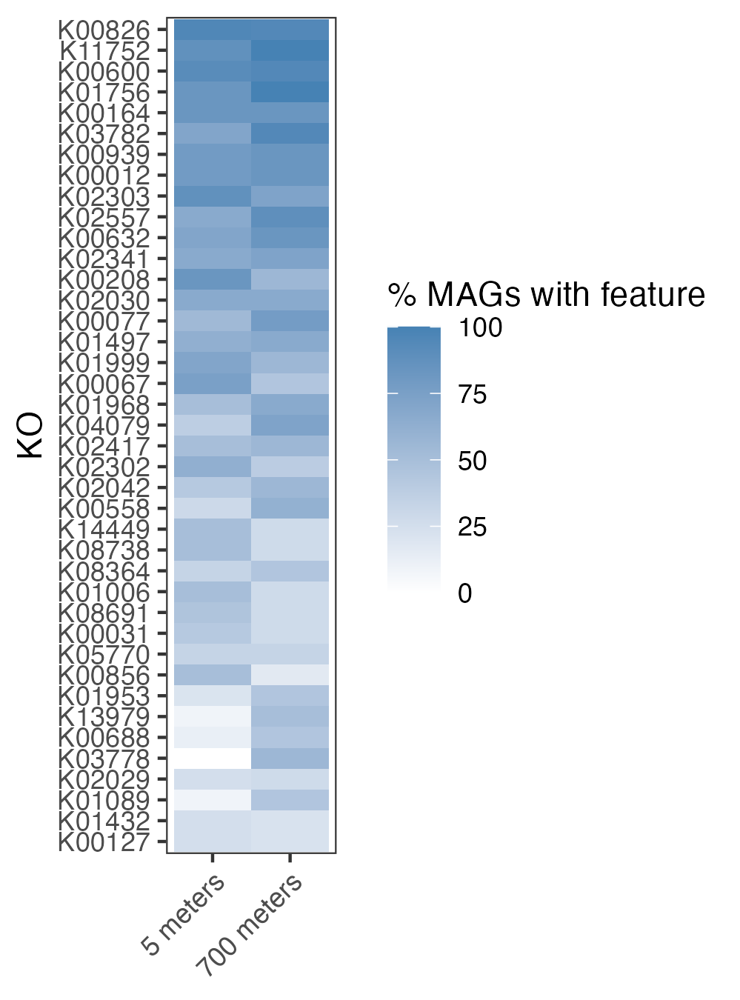
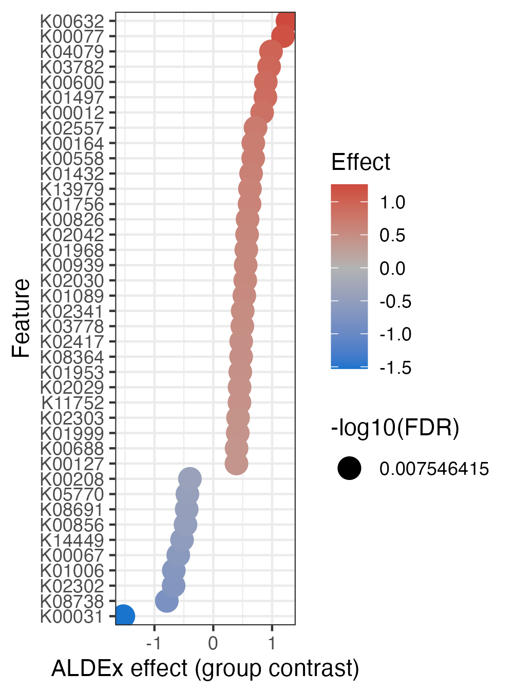
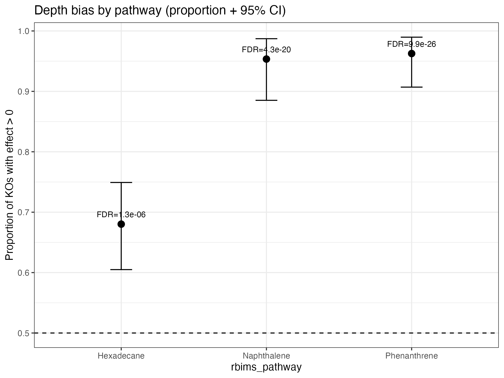

vignettes/13_Discriminant_analysis.Rmd
13_Discriminant_analysis.RmdThis vignette demonstrates how to:
get_subset_discriminant().The goal is to move from feature-level statistics to ecologically interpretable pathway-level patterns.
The KO table must:
"KO").rbims_pathway.The metadata must:
Bin_name column matching MAG column
names."Depth").
library(rbims)
library(dplyr)
#>
#> Attaching package: 'dplyr'
#> The following objects are masked from 'package:stats':
#>
#> filter, lag
#> The following objects are masked from 'package:base':
#>
#> intersect, setdiff, setequal, union
library(tidyr)
library(tibble)
library(ggplot2)
library(forcats)
stopifnot("KO" %in% names(ko_table))
mag_cols <- ko_table %>%
select(where(is.numeric)) %>%
names()
stopifnot(length(mag_cols) > 1)
stopifnot(all(c("Bin_name", "Depth") %in% names(metadata)))
metadata_use <- metadata %>%
select(Bin_name, Depth)
stopifnot(all(mag_cols %in% metadata_use$Bin_name))
stopifnot(nlevels(factor(metadata_use$Depth)) == 2)
tibble_disc <- get_subset_discriminant(
tibble_rbims = ko_table,
metadata = metadata_use,
analysis = "KEGG",
group_col = "Depth",
feature_col = "KO",
min_presence = 3,
score_min = 1
)
disc_obj <- attr(tibble_disc, "rbims_disc")Inspect score distribution:
plot_disc_heatmap(
disc_obj = disc_obj,
metadata = metadata_use,
group_col = "Depth",
top_n = 40
)
plot_disc_effect(disc_obj, top_n = 40)
ko_dictionary <- make_ko_dictionary(
tibble_rbims = ko_table,
feature_col = "KO"
)
pathways <- c("Hexadecane", "Naphthalene", "Phenanthrene")
pathway_tbl <- calc_pathway_directional_bias(
disc_obj = disc_obj,
ko_dictionary = ko_dictionary,
pathways = pathways,
p_null = 0.5,
p_alternative = "greater",
ci_two_sided = TRUE
)
pathway_tbl
plot_pathway_directional_bias(
pathway_tbl,
reorder = TRUE,
show_fdr_label = TRUE
)
A pathway shows directional bias when: